4.2 Step-By-Step IPM Example
This example shows how to run the IPM for mule deer in the Bannock DAU step by step, including screenshots of the website.
- Start by clicking IPM in the sidebar.
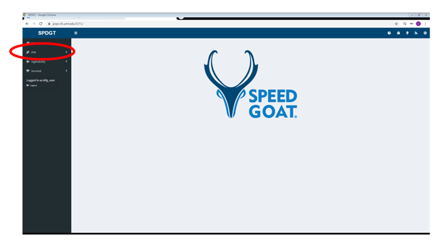
Select the Setup page in the sidebar, then select the species and DAU you want to model. Select the IPM database containing the estimates you want to use, and choose an option for incorporating [weather covariates](#gl-ipm-weather}.In this example we use mule deer and Bannock. Make sure to select the correct species and DAU before clicking the button to load harvest data.
Click the button labeled “Fetch Harvest Data” to load the data for the species and DAU you selected.
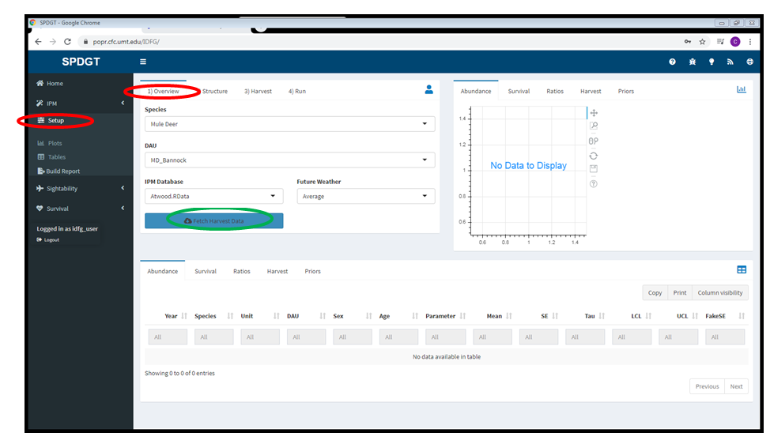
Once the data is loaded you should see a dialog indicating that the process was successful. Click Dismiss. If you receive an error see the errors section.
Review the data in the panes to the right and tables at the bottom (see Loading Data for details).
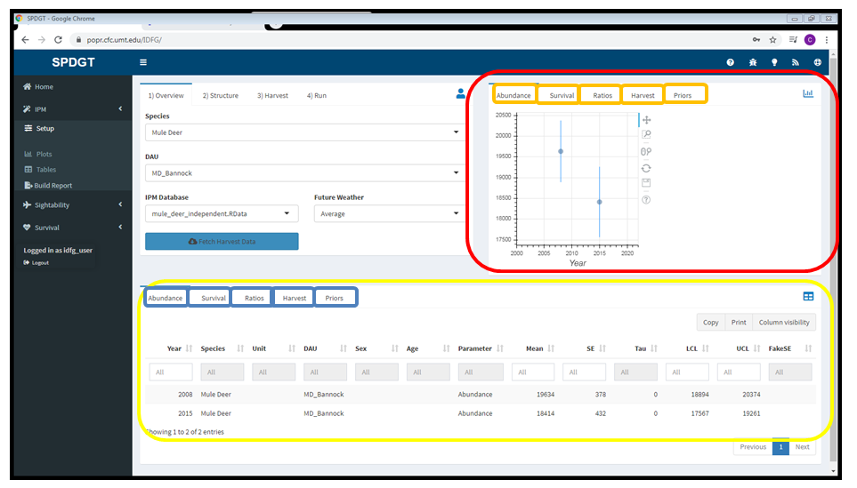
- In this example, the abundance data that will be used by the IPM was collected in the Bannock DAU in 2008 and 2015 shown in the graph in the upper right (red rectangle) and in the table at the bottom of the page (yellow rectangle).

- Move on to the Structure tab and click the button to apply the default settings. Your settings should match those in the screenshot below.
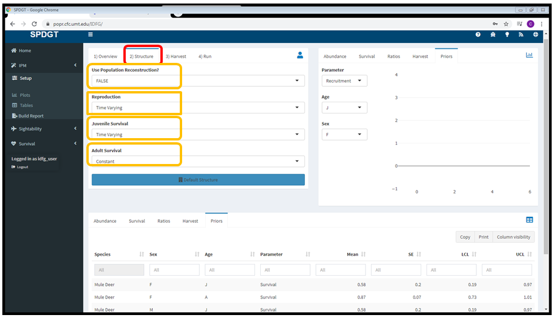
- Continue to the Harvest tab to review the settings there. The defaults were used for this example, so there’s no need to change anything.

- Now that you’ve selected the appropriate settings and reviewed the input data, switch to the Run tab. Change the burn in slider to 10,500, change the number of iterations to 41,000, and click Fit Model.
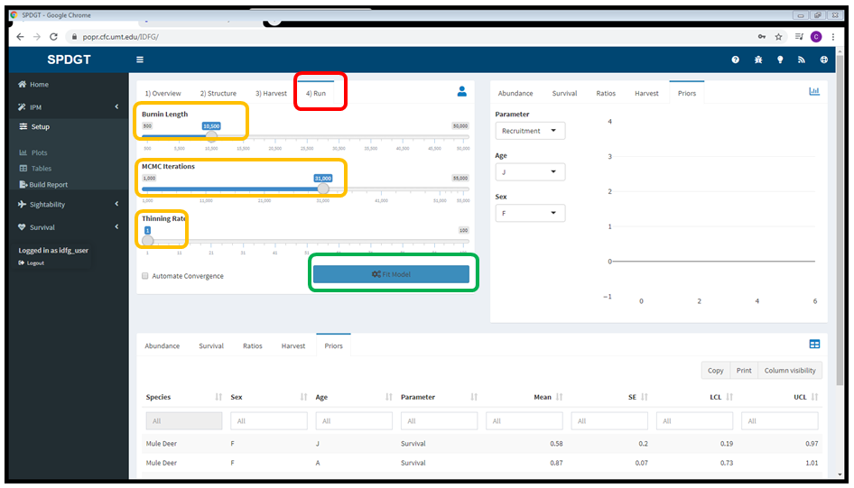
- Once model fitting is complete select the Plots page in the sidebar to view the output.
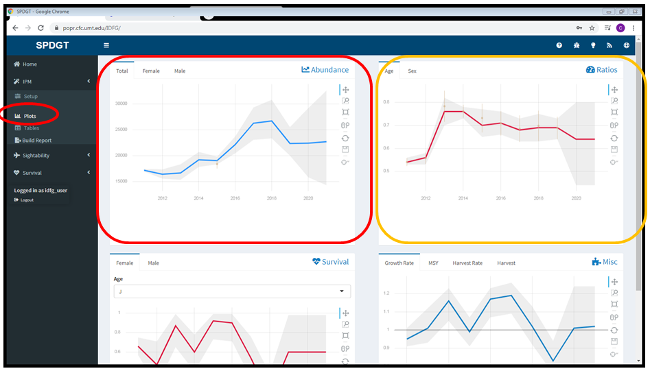
- Check the Tables page as well to see how the model performed. Note the Rhat values (> 1.1) that appear in red, indicating the model may not have converged.
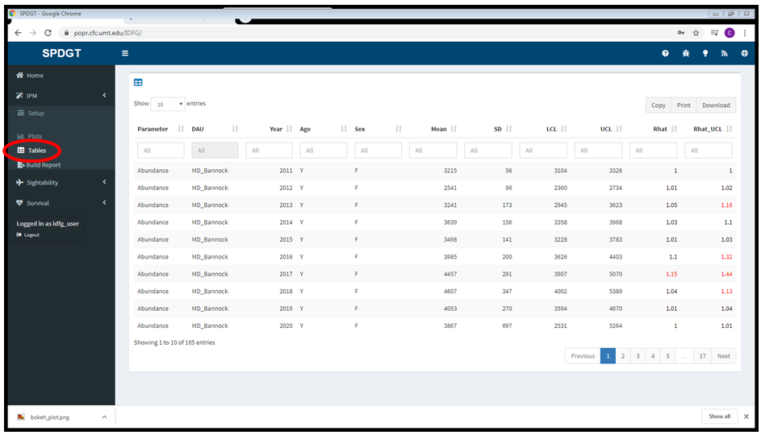
- Now build a report to see more diagnostic information. Click Build Report in the sidebar, then click the download button.
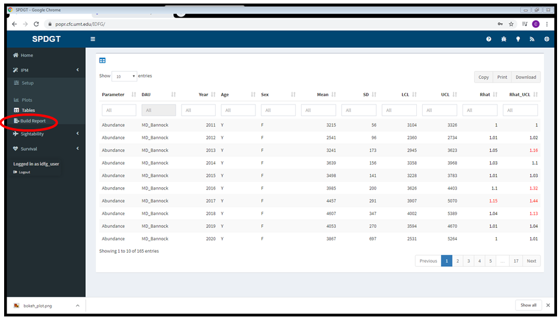
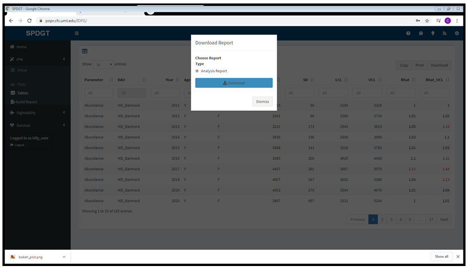
- Notice the diagnostic section in red, indicating that the model did not converge. In some cases this may indicate problems with the data or the model structure, but sometimes we just need to let the model run longer.
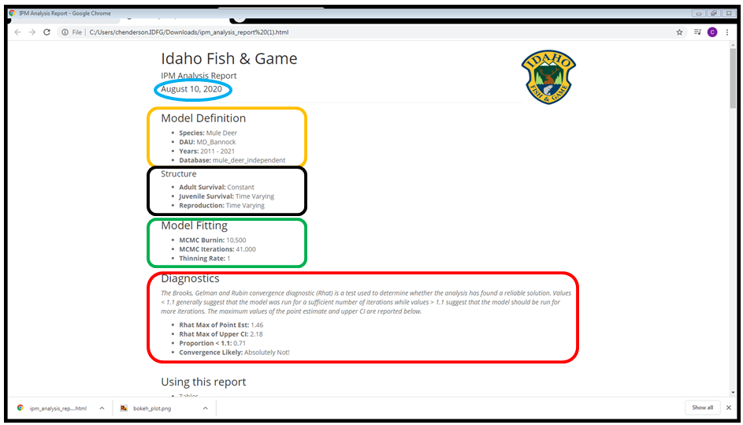
- Return to the Run tab on the setup page and click the checkbox to automate convergence, then run the model again.
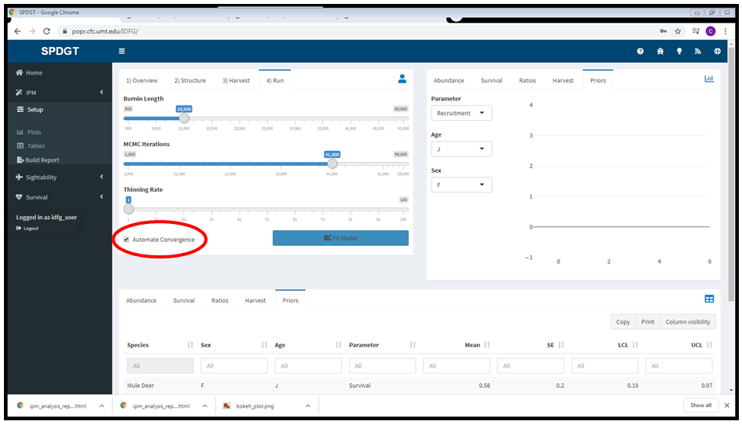
- Build a new report and check the diagnostics section again. Allowing the model to run as long as needed resulted in much better performance.
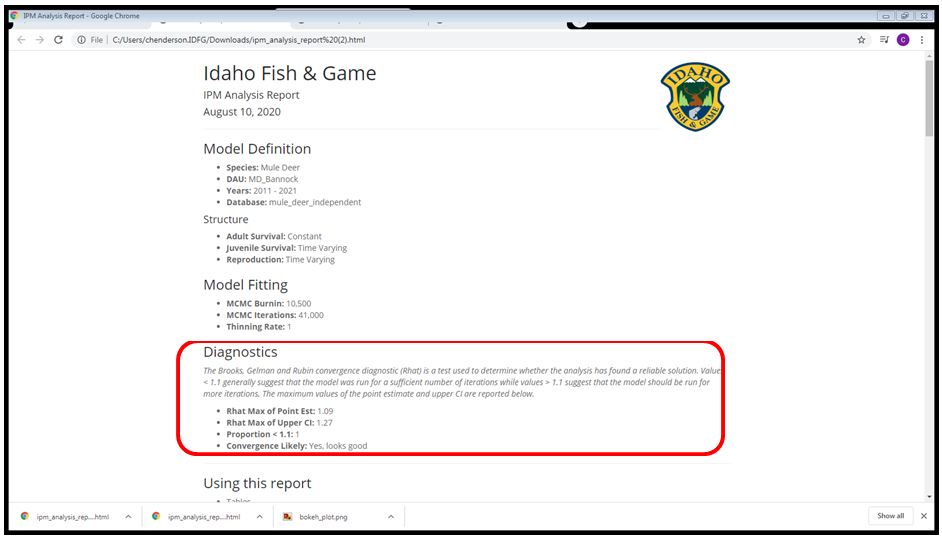
- Check out the tables and plots in the rest of the report to review your results.
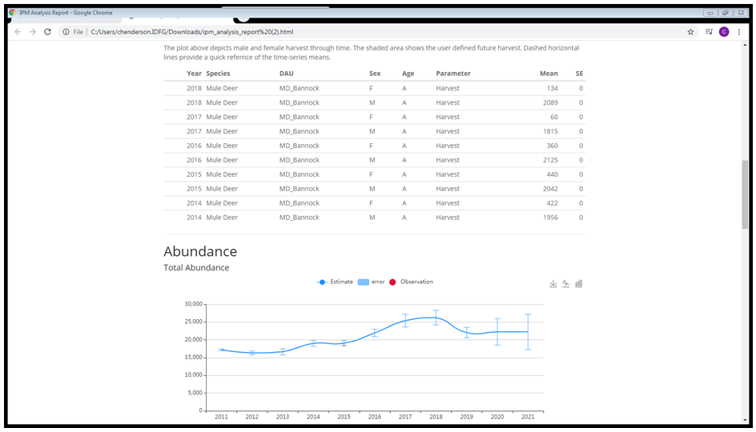
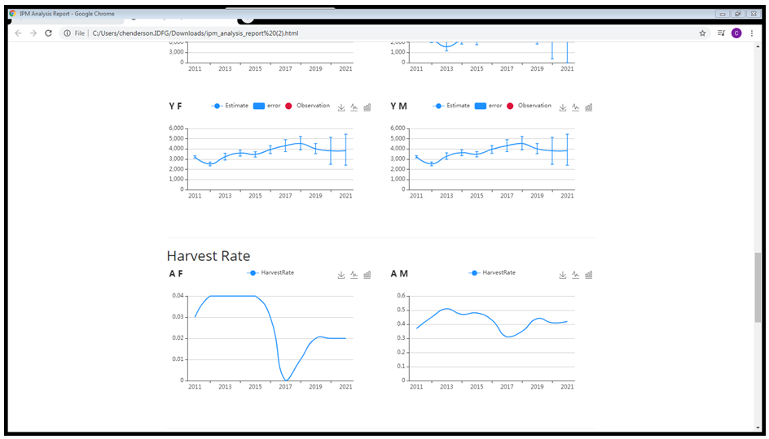